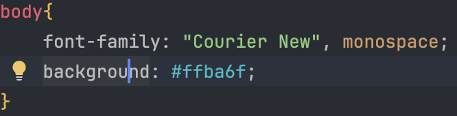
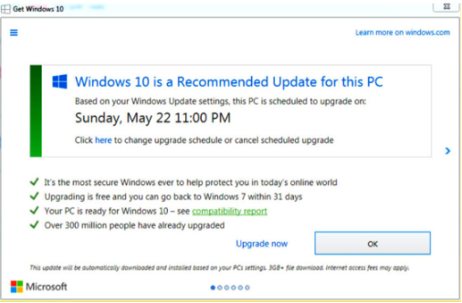
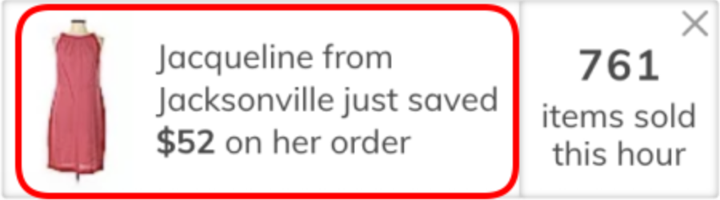

Who you are Interests Background Goals for the course Guiding questions for the course Your website set up


For my hyperlinks to the blog, home and research project, i should make these into larger buttons where it is easier for people to see that this is a link. At the moment, it is very small and if someone had impaired sight, it might be hard for them to realise that they can click on this and find out more about me.
I have set up so headings are in Ariel, sans-serif and the rest of the text that is in the body of the page, is in Courier New in the CSS class.


I used the website to check the contrast and found that I like this colour and the contrast is good and easy to read with black text.

I have created a header and different divisions for the main content of the page. As we can see all the content is in the middle of the page. I have set the images so they take up a portion of the main division content. This means when the page is resized, the images will also change size. The text also stays in the middle of the page as well. The navigation bar is at the top of the page, and is also resized with the size of the tab.


Having simple designs on a website can make someone more engaged and more likely to remain on the website. Nearly half of website visitors abandon a site after viewing just one page (6 Key Components of Good Website Design | Webflow Blog, 2025). The effect of having a clean website is that it is easy to see and understand. It will make it easier for everyone to learn more about the topic on the site. Making sure that things on the website are not all bunched together to make it hard to read. These will also make the website quicker to load another page as there isn’t as much for it to load which will keep people engaged on the website.

Having an option of a screen reader is important for someone who has a sight impairment. Making sure to have proper accessibility in a website is important so you account for every person who needs your website. To make this work you need to make sure that absolutely everything on the page can be read by the screen reader, including images. The effect this is to make sure that the person gets as much information as possible, and so they don’t miss out on things that could be important. You will get a wider audience of people that can use your website as well, which could be good if you are selling things for example.

Your website must be well organised by:

This is when fake information is put forward to trick the user. They become interested and makes them continue by clicking on it. Once they click though, what they wanted to happen usually is not the case at all and can force them into doing something they didn’t want to do. The effects of this are bad and makes people not trust the website and therefore, leave and maybe report the website. An example of this is the Windows 10 dialog box, where clicking ‘X’ initialises the upgrade process (Singh, 2021).
This is when you are going to pay for a subscription (usually), and you have different options you can choose from that vary in price. There is usually always one option that is selected by default. The effect of this is that people may not see that and think they have selected the one they want but then actually pay much more since they hadn’t chosen correctly. People might feel cheated/scammed by the website since they didn’t really want this option, and they paid it on accident and therefore may just refuse to use it altogether.

this is when you have fake likes, comments or shares that usually say positive things about something. This is so they can attract more people into looking and engaging with what they are advertising so they can make more money. The effect of this on people is that it can deceive them into using an “approved” program and waste time. Once people find out they’re being misled this creates loss of trust and if they have spent money, then more damage to their reputation will happen toward the person posting the ad.

6 key components of good website design | Webflow Blog. (2025). Webflow. Webflow blog
Singh, R. (2021, July 9). 10 Common Dark Patterns in UX and How to Avoid Them. Insights - Web and Mobile
Development Services and Solutions. netSolutions dark
patters
Add here your research for your portfolio design